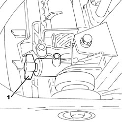
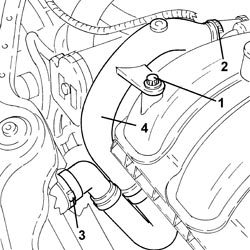
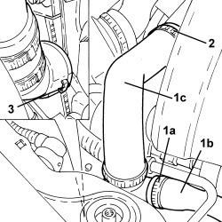
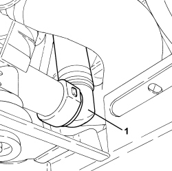
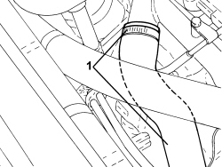

1088D10 RADIATOR COOLANT OUTLET HOSE - R.R.
- Path
- Procedures > 10 ENGINE > 1088 ENGINE COOLING > 1088D COOLANT PIPES AND HOSES > 1088D10 RADIATOR COOLANT OUTLET HOSE - R.R.
- Kind
- repair procedure (removal / refitting; the operation number is the code)
- Applies to
- all engines; all production periods
- Interactive page
- https://sloeber94.github.io/elrnDB-aBrrSpdr/en/#/946002011
Applies to: engines: 2.2 JTS; all production periods
 Removing
Removing
 Refitting
Refitting- Position the vehicle on a lift.
1. Undo the radiator coolant drain plug.

Applies to: engines: 2.2 JTS; all production periods
1. Undo the bolt fixing the lower coolant outlet hose from the radiator to the air chamber.
2. Loosen the band fixing the radiator lower coolant outlet hose, cylinder head side.
3. Disconnect the rapid connector for the radiator lower coolant outlet hose, radiator side.
4. Remove the lower coolant outlet hose from the radiator.

Applies to: engines: 2.2 JTS; all production periods
Refitting
Removing- Place the lower radiator coolant outlet hose back in its housing.
- Connect the rapid connector for the radiator lower coolant outlet hose, radiator side.
- Tighten the band fixing the radiator lower coolant outlet hose, cylinder head side.
- Tighten the bolt fixing the lower coolant outlet hose from the radiator to the air chamber.
- Tighten the coolant drain plug to the radiator.
Op. 0010T20 ENGINE COOLANT - CHANGE
- Remove the vehicle from the lift.
Applies to: engines: 3.2 JTS; all production periods
Removing
RefittingOp. 0010T20 ENGINE COOLANT - CHANGE
1. Loosen the band (1a) and disconnect the water return pipe (1b) from the water-oil heat exchanger from the water pump inlet hose (1c)
2. Loosen the band and disconnect the hose (1c) from the water pump rigid inlet pipe.
3. Disconnect the rapid connector and remove the radiator water outlet hose assembly (1c).

Applies to: engines: 3.2 JTS; all production periods
- If necessary, loosen the fastening bands and remove the three-way connector and the connector with the rapid connector.
Applies to: engines: 3.2 JTS; all production periods
Refitting
Removing- Place the connector with the rapid connector and the three-way connector in position and secure them using the bands.
- Place the radiator water outlet hose assembly in position and connect the rapid connector.
- Connect the hose to the water pump rigid inlet pipe using the band.
- Connect the water return pipe from the water-engine oil heat exchanger to the water pump inlet hose using the band.
Applies to: engines: 2.4 JTD 20v; all production periods
Removing
Refitting- Position the vehicle on a lift.
Op. 7055B54 UNDER ENGINE PROTECTION/GUARD - R.R.
- Undo the radiator coolant drain plug.
1. Disconnect the rapid connector for the radiator lower coolant outlet hose, radiator side.

Applies to: engines: 2.4 JTD 20v; all production periods
1. Loosen the band and disconnect the lower coolant outlet hose from the radiator, water pump rigid coolant inlet pipe side, then remove.

Applies to: engines: 2.4 JTD 20v; all production periods
Refitting
Removing- Place the lower coolant outlet hose from the radiator back in its housing, connect it to the water pump rigid coolant inlet pipe and tighten the band.
- Connect the rapid connector for the radiator lower coolant outlet hose, radiator side.
- Tighten the coolant drain plug to the radiator.
Op. 0010T20 ENGINE COOLANT - CHANGE
Op. 7055B54 UNDER ENGINE PROTECTION/GUARD - R.R.
- Remove the vehicle from the lift.